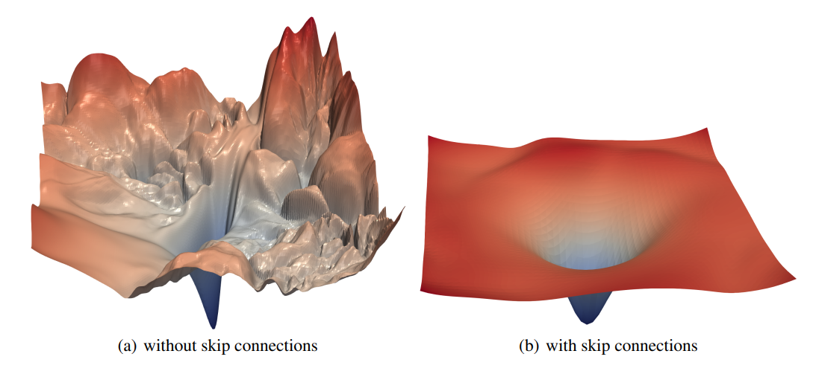

gantt
dateFormat YYYY-MM-DD
section Recherche
Thema definieren :done, lit1, 2025-04-04,2025-04-05
Literatur auswerten :done, lit2, 2025-04-05,2025-04-22
section Planung
Ziele definieren :done, plan1, 2025-04-05,2025-04-09
Ressourcen planen :done, plan2, 2025-04-09,2025-04-12
section Grundlagen
Theoretische Basis :done, grund1, 2025-04-09,2025-04-27
Framework definieren :done, grund2, 2025-04-09,2025-04-12
section Exploration
Datensatz Verständnis :done, data1, 2025-04-14,2025-04-27
Explorative Analyse :done, data2, 2025-04-14,2025-05-11
section Modell
Mathematische Grundlagen :done, model4, 2025-04-29, 2025-05-13
Modell konzipieren :done, model1, 2025-04-29,2025-05-17
Implementierung :done, model2, 2025-05-21,2025-06-23
Testing & Validierung :done, model3, 2025-06-08,2025-06-28
section Diskussion
Ergebnisse interpretieren :done, dis1, 2025-06-10,2025-06-28
Fazit & Ausblick :done, dis2, 2025-06-24,2025-06-29
Finalisierung :active, disk3, 2025-06-26,2025-07-02
Melanoma Präsentation
Einsatz von künstlicher Intelligenz zur Hautkrebsdiagnose
S. Wendland, M. Pöppel, J. H. Uemann
1 Einleitung
1.1 Relevanz
Alle 120 Minuten stirbt ein Mensch an Hautkrebs. Wie kann künstliche Intelligenz Leben retten? [1]
1895 entdeckte Wilhelm Röntgen die Röntgenstrahlen und revolutionierte die Medizin. Steht uns mit künstlicher Intelligenz eine noch größere Revolution bevor? [2]
1.2 Was ist Hautkrebs?
- Hautkrebs entsteht, wenn bestimmte Zellen der Haut unkontrolliert wachsen und in das umliegende Gewebe eindringen. Man unterscheidet dabei zwischen hellem Hautkrebs und schwarzem Hautkrebs.
Abbildung 1: Querrschnitt vom Hautkrebs
1.3 nicht-invasive Diagnoseverfahren
- Klinische Untersuchung
- Visuelle Begutachtung auffälliger Hautveränderungen durch Hautärzt
- Dermatoskopie
- Vergrößert und beleuchtet die Haut, macht Pigment- und Gefäßstrukturen sichtbar
- Konfokale Laserscanmikroskopie
- Optische Kohärenztomographie
1.4 KI und Computer Vision
1.5 Ziele
Auseinandersetzung mit dem Einsatz von künstlicher Intelligenz
Verständnis der Potenziale und Grenzen der Technologie
Einordnung der Ergebnisse in den fachlichen Kontext
Einschätzung, ob und wie KI in diesem Anwendungsfeld eingesetzt werden kann
1.6 Abgrenzung
- Fokus auf Dermatoskopie
- Hautoberfläche reflektiert und tiefere Details unsichtbar
- Kleiner Datensatz
- 10015 Samples
- 7 Features
1.7 Unser Vorgehen
2 Theoretische Grundlagen
2.1 Grundlagen Computer Vision
Wie kann ein Computer sehen?
Faltung (Convolution)
\[ I^{\ast} (x, y) = \sum^n_{i=1} \sum^n_{j=1}{I(x-i+a, y-j+a)K(i, j)} \]
Aufmerksamkeitsmechanismus (Attention)
\[ \text{Attention}(Q, K, V) = \text{softmax}\left( \frac{QK^\top}{\sqrt{d_k}} \right) V \]
Faltung (in CNNs)
- Ein Filter (Kernel) durchläuft das Bild stückweise um Muster zu erkennen
- Frühere Schichten erkennen einfache Merkmale wie Kanten, Ecken, Farbübergänge
- Spätere Schichten kombinieren einfache Muster zu komplexeren Formen
- CNNs erkennen Merkmale unabhängig von ihrer Position im Bild

Abbildung 3: CNN Architektur (aus Medium)
Achtsamkeitsmechanismus (in ViTs)
- Bild wird in kleine Patches zerlegt, die wie Wörter verarbeitet werden
- Jedes Patch achtet auf andere Patches und gewichtet deren Einfluss (Self-Attention)
- Modell lernt Beziehungen zwischen Bildteilen unabhängig von deren Abstand
- ViTs erkennen globale Zusammenhänge frühzeitig, nicht nur lokale Muster
2.2 Was passiert bei der Faltung
- üîç Ein Filter \(K\) √ºberlagert das Bild \(I\) und blickt auf einen \(n \times n\) Bereich
- ➕ Überlappende Werte werden multipliziert und aufsummiert
- üéØ Ein einzelner neuer Wert entsteht \(I^{\ast} (x, y)\)
\[ I^{\ast} (x, y) = \sum^n_{i=1} \sum^n_{j=1}{I(x-i+a, y-j+a)K(i, j)} \]
2.3 Anwendung der Faltung in CNNs
- ✅ Je nach Wahl des Kernels \(K\) werden unterschiedliche Merkmale hervorgehoben
- üèéÔ∏è Der Kernel \(K\) bewegt sich st√ºckweise √ºber das komplette Bild \(I\)
- üèÉüèø‚Äç‚ôÇÔ∏è‚Äç‚û°Ô∏è Die Schrittweite des Kernels ist variabel und wird als Stride bezeichnet
- üÖæÔ∏è Padding ist m√∂glich (0 Werte am Rand der Matrix)
2.4 Begriffsklärung Convolution


2.5 Pooling in CNNs
- ⬇️ Reduziert die Bildgröße durch Zusammenfassen benachtbarter Pixel
- üíª Verringert Rechenaufwand und Anzahl der Paramter
- üü∞ Teilweise translationsinvariant (\(f:\mathbb{R}^2 \to \mathbb{R}\), \(f(A) = f(A + t)\) )
- üèÉüèø‚Äç‚ôÇÔ∏è‚Äç‚û°Ô∏è Ein Fenster bewegt sich st√ºckweise √ºber das komplette Bild (√§hnlich zur Faltung)
Arten von Pooling
- Max-Pooling: Gibt den höchsten Wert im Fenster zurück
- Average-Pooling: Gibt den Durchschnittswert aller Werte im Fenster zurück
- Global Pooling: Aggregiert das gesamte Bild (Fenstergröße = Bildgröße)

2.6 Aktivierungsfunktionen
- üìè Werden nach Faltungen / Linearkombinationen eingesetzt
- üé¢ Ohne Aktivierung w√§re ein tiefes Netz nur eine lineare Funktion
- üìä Helfen beim Lernen von Mustern und Entscheidungsgrenzen
- üíØ Werden punktweise auf jedes Pixel / Feature angewendet
Rectified linear unit (ReLU)
- ℹ️ Einfach, schnell, sparsamer Gradient
- üéØ Eliminiert negative Werte
\[ f(x) = \text{max}(0, x) \]
Sigmoid
- ℹ️ Glättet Werte auf kontinuierliche Skala
- üéØ Skaliert Eingaben in den Bereich (0,‚ÄØ1)
- üîª Kann bei gro√üen |x| zum Gradient-Verschwinden f√ºhren
\[ f(x) = \frac{1}{1 + e^{-x}} \]
Softmax
- ℹ️ Für Klassifikation mit mehreren Klassen (z. B. Ausgabeschicht)
- üéØ Wandelt Rohwerte in Wahrscheinlichkeitsverteilung
\[ f(x_i) = \frac{e^{x_i}}{\sum_{j=1}^k e^{x_j}} \]
2.7 Architektur eines CNNs
2.8 Verdichtungs- und Verstärkungsblöcke (SE1)
- ℹ️ Analysiert wie wichtig jeder Kanal der Feature Map ist und verstärkt oder unterdrückt
- ℹ️ Verwendet Global Average Pooling
- üéØ Adaptive Belohnung relevanter Kan√§le
- üéØ Bessere Genauigkeit durch gezieltere Merkmalsverarbeitung
2.9 Designpatterns mit Faltung
2.10 Gradienten und deren Aussagekraft
- ℹ️ Der Gradient ist die Ableitung einer Funktion nach ihren Eingabewerten
- üéØ Zeigt Richtung des st√§rksten Wachstums und Einfluss der Parameter
- üñºÔ∏è Dargestellt durch den Nabla Operator \(\nabla\)
\[ f : \mathbb{R}^2 \to \mathbb{R} \]
\[ f(x, y) = 2x^2 + 3y \]
\[ \nabla f = \begin{pmatrix} \frac{\partial f}{\partial x} \\ \frac{\partial f}{\partial y} \end{pmatrix} = \begin{pmatrix} 4x \\ 3 \end{pmatrix} \]
\[ \nabla f = \begin{pmatrix} \frac{\partial f}{\partial x} \\ \frac{\partial f}{\partial y} \end{pmatrix} = \begin{pmatrix} 4x \\ 3 \end{pmatrix} \]
- ℹ️ \(x\) hat den größten Einfluss auf die Steigung von \(f\)
- ℹ️ \(y\) hat konstant positiven Einfluss auf die Funktion
- ℹ️ \(\nabla f\): Richtung des größten Wachstums
- ℹ️ \(-\nabla f\): Richtung der größten Abnahme
2.11 Kostenfunktionen (Loss Function)
- ℹ️ Messen den Unterschied zwischen Schätzung \(\hat{y}\) und Zielwert \(y\)
- ℹ️ Bei Klassifikationsproblemen eignet sich Cross Entropy Loss
- üéØ Fehlerwert durch Anpassung der Gewichte zu minimieren
2.12 Gewichtsanpassung
- ℹ️ Nutzt den Gradienten der Kostenfunktion, um zu bestimmen, wie stark jedes Gewicht beiträgt
- ℹ️ Beruht auf der Kettenregel der Ableitung
- üéØ Fehlerwert durch Anpassung der Gewichte zu minimieren
Gradient Descent
- ℹ️ Iterativer Optimierungsalgorithmus
- üéØ Gewichte in Richtung des negativen Gradienten Bewegen
\[ w_i \gets w_i - \eta \cdot \frac{\partial L}{\partial w_i} \]
Kettenregel
\[ f(x) = u(v(x)) \]
\[ f'(x) = u'(v(x)) v'(x) \]
Kettenregel
\[ L(\sigma(z_6)) \]
\[ \frac{dL}{dz_6} = \frac{dL}{d \sigma (z_6)} \frac{d \sigma (z_6)}{dz_6} \]
Problem: \(z_6(\sigma (z_5))\), \(z_5(\sigma (z_4))\), …
\[ \sigma(x) = \frac{1}{1 + e^{-x}} \]
\[ \frac{d\sigma}{dx} = \sigma(x)(1-\sigma(x)) \]
2.13 Lösung durch Skip Connections
- ℹ️ Überspringen einer oder mehrerer Schichten, indem Eingabe / Neuron direkt zu späteren Schichten weiterleitet
- üéØ Hilft beim Training tiefer Netze durch verbesserung des Gradientenfluss

Abbildung 6: Skip Connections
Abbildung 7: Gewichtsanpassung mit Skip Connections
2.14 Fehlerlandschaft nach Skip Connections
Abbildung 8: Fehlerlandschaft Kostenfunktion
3 Datensatz und Modellentwicklung
3.1 Vorstellung des Datensatzes
| lesion_id | image_id | dx | dx_type | age | sex | localization | |
|---|---|---|---|---|---|---|---|
| 5080 | HAM_0004175 | ISIC_0028806 | nv | follow_up | 50.0 | female | abdomen |
| 564 | HAM_0006595 | ISIC_0028223 | bkl | histo | 55.0 | female | face |
| 7369 | HAM_0005248 | ISIC_0032948 | nv | histo | 45.0 | female | upper extremity |
| 5150 | HAM_0001592 | ISIC_0030686 | nv | follow_up | 55.0 | male | back |
| 9790 | HAM_0004609 | ISIC_0024710 | akiec | histo | 75.0 | male | back |
| 9103 | HAM_0000976 | ISIC_0031880 | nv | histo | 40.0 | male | chest |
| 3013 | HAM_0000256 | ISIC_0029347 | nv | follow_up | 50.0 | male | back |
| 8961 | HAM_0000762 | ISIC_0028982 | nv | histo | 30.0 | female | back |
3.2 Beispiele aus dem Datensatz


3.3 Datenexploration - Altersgruppen
Abbildung 16: Anzahl der gefährlichen Diagnosen nach Alter
3.4 Datenexploration - Körperstellen
Abbildung 17: Verteilung der Körperstellen nach Diagnose (gefährl. Diagnosen)
3.5 Datenexploration - Anteile gefährlicher Diagnosen
Abbildung 18: Anteil gefährlicher Diagnosen unter allen gefährlichen Fällen
3.6 Unser Modell (EffiecientNetV2 BB)
- ℹ️ Kombination aus Neural Architecture Search1 und manuellem Feintuning
- ℹ️ Integriert Fused-MBConv Blöcke (Abbildung 5)
- ℹ️ Basiert auf ImageNet Datenbasis
- üéØ Schnelles Training gro√üer Modelle
- üéØ Geeignet f√ºr Transfer Learning durch Generalisierung
Abbildung 19: EfficientNetV2 Architektur
Abbildung 20: Tensorflow Visualisierung
import tensorflow as tf
from tensorflow.keras.applications import EfficientNetV2B0
base_model = EfficientNetV2B0(
include_top=False,
weights='imagenet',
input_shape=(244, 244, 3)
)
model = tf.keras.Sequential([
base_model,
tf.keras.layers.GlobalAveragePooling2D(),
tf.keras.layers.Dropout(0.2),
tf.keras.layers.Dense(7, activation="softmax")
])3.7 Modellevaluierung
Abbildung 22: Benchmark Steptime
Abbildung 23: Benchmark Parameter
4 Auswertung und Vergleich
4.1 Ergebnisse der Eigenentwicklung

Abbildung 24: Trainingsverlauf

Abbildung 25: Konfusionsmatrix
| Label | Precision | Recall | F1-Score | Support |
|---|---|---|---|---|
| akiec | 0.609 | 0.646 | 0.627 | 65 |
| bcc | 0.748 | 0.835 | 0.789 | 103 |
| bkl | 0.772 | 0.645 | 0.703 | 220 |
| df | 0.737 | 0.609 | 0.667 | 23 |
| nv | 0.926 | 0.931 | 0.929 | 1341 |
| mel | 0.647 | 0.673 | 0.659 | 223 |
| vasc | 0.743 | 0.929 | 0.825 | 28 |
4.2 Potenzial
- Wo sehen wir konkretes Verbesserungspotential?
- Training eines spezifischen CNNs statt allgemeinem EfficientNetV2-CNN
- Weiteres Training um bessere “minima” zu finden bzw. andere Optimierer testen/bestimmen
- Größerer Datensatz (min. gleichbleibende Qualität)
- Bessere Datenqualität
4.3 Grenzen
- Wo sehen wir konkrete Limits?
- Bei der Nachvollziehbarkeit der Kriterien zur Klassifikation durch das CNN (Blackbox)
- Perfekte Filterwerte nicht realistisch (nach aktueller Forschung)
- Biopsie wird nicht ersetzt (Accuarcy Score, Bildqualität etc.)
4.4 Fazit
- Einordnung der Ergebnisse in den fachlichen Kontext (Fazit, auf Einleitungsfrage)
- Vergleich: Wie passen unsere Ergebnisse zu dem, was andere Studien zeigen?
- Relevanz? (ja, Einleitung)
- Praxisbezug? (ja, echte Daten aus Beschreibung Datensatz?)
4.5 Ausblick
- eig Kapitel overkill stattdessen im Ausblick als pkt - Frauenhofer / Bosch Lösung (vilt oben beim Vergleich erwähnen?)
- Rechtliche Komplikationen bei Datenhaltung?
- AlphaFold2
- Einschätzug KI bezogen auf Röntgen
4.6 Alternative Modelle
- Marc vergleichstabelle ???
4.7 LLMs im Test
| Image Id | dx | Claude | ChatGPT | Own Model |
|---|---|---|---|---|
| ISIC_0031923 | nv | mel | mel | nv |
| ISIC_0026652 | mel | bkl | nv | mel |
| ISIC_0030583 | bkl | bcc | bcc | bkl |
- Fazit: LLMs nicht zur Diagnose verwenden üòâ
5 Einsatz von KI im Projekt
5.1 Programmierung
- framework verständnis
- etc. sponti
5.2 Dokumentation
- umformulierung
- darstellung
5.3 Allgemein
- wissen
- recherche
6 Literaturverzeichnus
[1]
S. B. Deutschland, „Zahl der Woche Nr. 22“. 2024. Verfügbar unter: https://www.destatis.de/DE/Presse/Pressemitteilungen/Zahl-der-Woche/2024/PD24_22_p002.html
[2]
W. C. Röntgen, „Über eine neue Art von Strahlen (Vorläufige Mittheilung)“, Sitzungsberichte der Würzburger Physikalisch-medizinischen Gesellschaft, Bd. 1895, S. 137–147, 1895.
[3]
G. Bradski und A. Kaehler, Learning OpenCV. Sebastopol, CA, USA: O’Reilly Media, Inc., 2008.
[4]
A. Vaswani u. a., „Attention Is All You Need“, CoRR, Bd. abs/1706.03762, 2017, Verfügbar unter: http://arxiv.org/abs/1706.03762
[5]
A. Basit, M. A. Siddique, M. Bhatti, und M. Sarfraz, „Comparison of CNNs and Vision Transformers-Based Hybrid Models Using Gradient Profile Loss for Classification of Oil Spills in SAR Images“, Remote Sensing, Bd. 14, S. 2085, Apr. 2022, doi: 10.3390/rs14092085.
[6]
M. Tan und Q. V. Le, „EfficientNetV2: Smaller Models and Faster Training“. 2021. Verfügbar unter: https://arxiv.org/abs/2104.00298